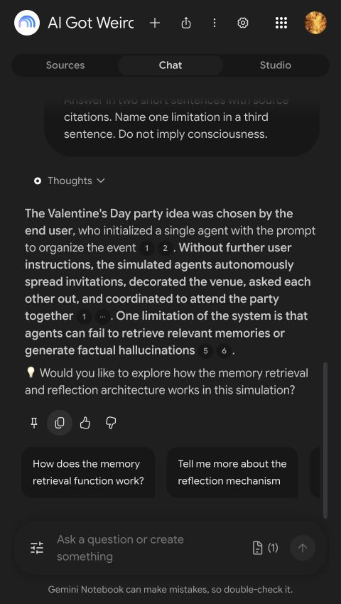

AI GOT WEIRDFREE WORKFLOW - CHECKED 16 OCT 2026
Make your PDF show its receipts.
Got a document you keep putting off? Ask one useful question. Then use the citation to check the answer.
Download the free checklistNo email or subscription required.
Try it in three steps
- Open Gemini Notebook, formerly NotebookLM. Add a public PDF or a document you have permission to process.
- Ask something specific: what changed, what should I do next, or what does this document actually prove?
- Click the citation beside an important claim. Read the passage and its context. Check whether it supports that exact claim.
The Standard plan is free with an eligible Google account. Usage limits and availability apply. Google's current plans.
A prompt to keep
Using only this source, answer: [my question]. Give source citations for the important claims. Separate facts from your interpretation. Tell me what the source cannot establish. If the answer is missing, say so.
What happened when we tried it
We imported the public Generative Agents paper and asked who chose its simulated party idea. The answer returned numbered citations. Opening one revealed the source passage, which supported the user-specified setup.

It also added a follow-up we hadn't asked for. One successful citation check is a useful demonstration, not a reliability benchmark.
Keep checking the important claims. Citations make answers easier to inspect. They do not guarantee accuracy.
Worth saving. Worth trying.
AI Got Weird pairs strange AI stories with useful tools and workflows like this. Short visuals, original sources and honest limits.
Follow AI Got Weird on TelegramIndependent project by Artem. AI-assisted writing and editing, individually reviewed. Actual product screenshot from our test. No sponsorship or affiliate link. No paid plan was purchased for this test.